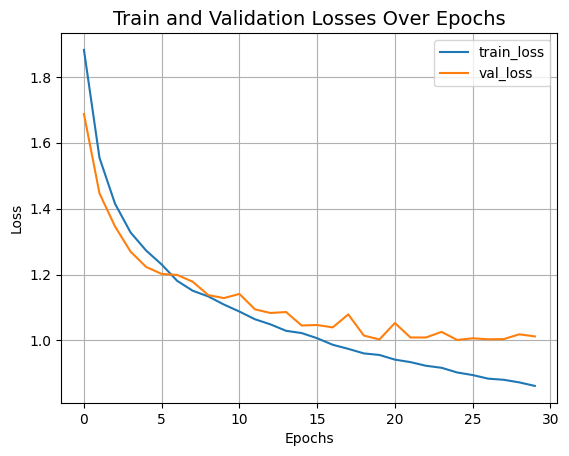

Compact Convolutional Transformers
Author: Sayak Paul
Date created: 2021/06/30
Last modified: 2023/08/07
Description: Compact Convolutional Transformers for efficient image classification.

As discussed in the Vision Transformers (ViT) paper, a Transformer-based architecture for vision typically requires a larger dataset than usual, as well as a longer pre-training schedule. ImageNet-1k (which has about a million images) is considered to fall under the medium-sized data regime with respect to ViTs. This is primarily because, unlike CNNs, ViTs (or a typical Transformer-based architecture) do not have well-informed inductive biases (such as convolutions for processing images). This begs the question: can't we combine the benefits of convolution and the benefits of Transformers in a single network architecture? These benefits include parameter-efficiency, and self-attention to process long-range and global dependencies (interactions between different regions in an image).
In Escaping the Big Data Paradigm with Compact Transformers, Hassani et al. present an approach for doing exactly this. They proposed the Compact Convolutional Transformer (CCT) architecture. In this example, we will work on an implementation of CCT and we will see how well it performs on the CIFAR-10 dataset.
If you are unfamiliar with the concept of self-attention or Transformers, you can read this chapter from François Chollet's book Deep Learning with Python. This example uses code snippets from another example, Image classification with Vision Transformer.
Imports
from keras import layers
import keras
import matplotlib.pyplot as plt
import numpy as np
Hyperparameters and constants
positional_emb = True
conv_layers = 2
projection_dim = 128
num_heads = 2
transformer_units = [
projection_dim,
projection_dim,
]
transformer_layers = 2
stochastic_depth_rate = 0.1
learning_rate = 0.001
weight_decay = 0.0001
batch_size = 128
num_epochs = 30
image_size = 32
Load CIFAR-10 dataset
num_classes = 10
input_shape = (32, 32, 3)
(x_train, y_train), (x_test, y_test) = keras.datasets.cifar10.load_data()
y_train = keras.utils.to_categorical(y_train, num_classes)
y_test = keras.utils.to_categorical(y_test, num_classes)
print(f"x_train shape: {x_train.shape} - y_train shape: {y_train.shape}")
print(f"x_test shape: {x_test.shape} - y_test shape: {y_test.shape}")
x_train shape: (50000, 32, 32, 3) - y_train shape: (50000, 10)
x_test shape: (10000, 32, 32, 3) - y_test shape: (10000, 10)
The CCT tokenizer
The first recipe introduced by the CCT authors is the tokenizer for processing the images. In a standard ViT, images are organized into uniform non-overlapping patches. This eliminates the boundary-level information present in between different patches. This is important for a neural network to effectively exploit the locality information. The figure below presents an illustration of how images are organized into patches.

We already know that convolutions are quite good at exploiting locality information. So, based on this, the authors introduce an all-convolution mini-network to produce image patches.
class CCTTokenizer(layers.Layer):
def __init__(
self,
kernel_size=3,
stride=1,
padding=1,
pooling_kernel_size=3,
pooling_stride=2,
num_conv_layers=conv_layers,
num_output_channels=[64, 128],
positional_emb=positional_emb,
**kwargs,
):
super().__init__(**kwargs)
# This is our tokenizer.
self.conv_model = keras.Sequential()
for i in range(num_conv_layers):
self.conv_model.add(
layers.Conv2D(
num_output_channels[i],
kernel_size,
stride,
padding="valid",
use_bias=False,
activation="relu",
kernel_initializer="he_normal",
)
)
self.conv_model.add(layers.ZeroPadding2D(padding))
self.conv_model.add(
layers.MaxPooling2D(pooling_kernel_size, pooling_stride, "same")
)
self.positional_emb = positional_emb
def call(self, images):
outputs = self.conv_model(images)
# After passing the images through our mini-network the spatial dimensions
# are flattened to form sequences.
reshaped = keras.ops.reshape(
outputs,
(
-1,
keras.ops.shape(outputs)[1] * keras.ops.shape(outputs)[2],
keras.ops.shape(outputs)[-1],
),
)
return reshaped
Positional embeddings are optional in CCT. If we want to use them, we can use the Layer defined below.
class PositionEmbedding(keras.layers.Layer):
def __init__(
self,
sequence_length,
initializer="glorot_uniform",
**kwargs,
):
super().__init__(**kwargs)
if sequence_length is None:
raise ValueError("`sequence_length` must be an Integer, received `None`.")
self.sequence_length = int(sequence_length)
self.initializer = keras.initializers.get(initializer)
def get_config(self):
config = super().get_config()
config.update(
{
"sequence_length": self.sequence_length,
"initializer": keras.initializers.serialize(self.initializer),
}
)
return config
def build(self, input_shape):
feature_size = input_shape[-1]
self.position_embeddings = self.add_weight(
name="embeddings",
shape=[self.sequence_length, feature_size],
initializer=self.initializer,
trainable=True,
)
super().build(input_shape)
def call(self, inputs, start_index=0):
shape = keras.ops.shape(inputs)
feature_length = shape[-1]
sequence_length = shape[-2]
# trim to match the length of the input sequence, which might be less
# than the sequence_length of the layer.
position_embeddings = keras.ops.convert_to_tensor(self.position_embeddings)
position_embeddings = keras.ops.slice(
position_embeddings,
(start_index, 0),
(sequence_length, feature_length),
)
return keras.ops.broadcast_to(position_embeddings, shape)
def compute_output_shape(self, input_shape):
return input_shape
Sequence Pooling
Another recipe introduced in CCT is attention pooling or sequence pooling. In ViT, only the feature map corresponding to the class token is pooled and is then used for the subsequent classification task (or any other downstream task).
class SequencePooling(layers.Layer):
def __init__(self):
super().__init__()
self.attention = layers.Dense(1)
def call(self, x):
attention_weights = keras.ops.softmax(self.attention(x), axis=1)
attention_weights = keras.ops.transpose(attention_weights, axes=(0, 2, 1))
weighted_representation = keras.ops.matmul(attention_weights, x)
return keras.ops.squeeze(weighted_representation, -2)
Stochastic depth for regularization
Stochastic depth is a regularization technique that randomly drops a set of layers. During inference, the layers are kept as they are. It is very much similar to Dropout but only that it operates on a block of layers rather than individual nodes present inside a layer. In CCT, stochastic depth is used just before the residual blocks of a Transformers encoder.
# Referred from: github.com:rwightman/pytorch-image-models.
class StochasticDepth(layers.Layer):
def __init__(self, drop_prop, **kwargs):
super().__init__(**kwargs)
self.drop_prob = drop_prop
self.seed_generator = keras.random.SeedGenerator(1337)
def call(self, x, training=None):
if training:
keep_prob = 1 - self.drop_prob
shape = (keras.ops.shape(x)[0],) + (1,) * (len(x.shape) - 1)
random_tensor = keep_prob + keras.random.uniform(
shape, 0, 1, seed=self.seed_generator
)
random_tensor = keras.ops.floor(random_tensor)
return (x / keep_prob) * random_tensor
return x
MLP for the Transformers encoder
def mlp(x, hidden_units, dropout_rate):
for units in hidden_units:
x = layers.Dense(units, activation=keras.ops.gelu)(x)
x = layers.Dropout(dropout_rate)(x)
return x
Data augmentation
In the original paper, the authors use AutoAugment to induce stronger regularization. For this example, we will be using the standard geometric augmentations like random cropping and flipping.
# Note the rescaling layer. These layers have pre-defined inference behavior.
data_augmentation = keras.Sequential(
[
layers.Rescaling(scale=1.0 / 255),
layers.RandomCrop(image_size, image_size),
layers.RandomFlip("horizontal"),
],
name="data_augmentation",
)
The final CCT model
In CCT, outputs from the Transformers encoder are weighted and then passed on to the final task-specific layer (in this example, we do classification).
def create_cct_model(
image_size=image_size,
input_shape=input_shape,
num_heads=num_heads,
projection_dim=projection_dim,
transformer_units=transformer_units,
):
inputs = layers.Input(input_shape)
# Augment data.
augmented = data_augmentation(inputs)
# Encode patches.
cct_tokenizer = CCTTokenizer()
encoded_patches = cct_tokenizer(augmented)
# Apply positional embedding.
if positional_emb:
sequence_length = encoded_patches.shape[1]
encoded_patches += PositionEmbedding(sequence_length=sequence_length)(
encoded_patches
)
# Calculate Stochastic Depth probabilities.
dpr = [x for x in np.linspace(0, stochastic_depth_rate, transformer_layers)]
# Create multiple layers of the Transformer block.
for i in range(transformer_layers):
# Layer normalization 1.
x1 = layers.LayerNormalization(epsilon=1e-5)(encoded_patches)
# Create a multi-head attention layer.
attention_output = layers.MultiHeadAttention(
num_heads=num_heads, key_dim=projection_dim, dropout=0.1
)(x1, x1)
# Skip connection 1.
attention_output = StochasticDepth(dpr[i])(attention_output)
x2 = layers.Add()([attention_output, encoded_patches])
# Layer normalization 2.
x3 = layers.LayerNormalization(epsilon=1e-5)(x2)
# MLP.
x3 = mlp(x3, hidden_units=transformer_units, dropout_rate=0.1)
# Skip connection 2.
x3 = StochasticDepth(dpr[i])(x3)
encoded_patches = layers.Add()([x3, x2])
# Apply sequence pooling.
representation = layers.LayerNormalization(epsilon=1e-5)(encoded_patches)
weighted_representation = SequencePooling()(representation)
# Classify outputs.
logits = layers.Dense(num_classes)(weighted_representation)
# Create the Keras model.
model = keras.Model(inputs=inputs, outputs=logits)
return model
Model training and evaluation
def run_experiment(model):
optimizer = keras.optimizers.AdamW(learning_rate=0.001, weight_decay=0.0001)
model.compile(
optimizer=optimizer,
loss=keras.losses.CategoricalCrossentropy(
from_logits=True, label_smoothing=0.1
),
metrics=[
keras.metrics.CategoricalAccuracy(name="accuracy"),
keras.metrics.TopKCategoricalAccuracy(5, name="top-5-accuracy"),
],
)
checkpoint_filepath = "/tmp/checkpoint.weights.h5"
checkpoint_callback = keras.callbacks.ModelCheckpoint(
checkpoint_filepath,
monitor="val_accuracy",
save_best_only=True,
save_weights_only=True,
)
history = model.fit(
x=x_train,
y=y_train,
batch_size=batch_size,
epochs=num_epochs,
validation_split=0.1,
callbacks=[checkpoint_callback],
)
model.load_weights(checkpoint_filepath)
_, accuracy, top_5_accuracy = model.evaluate(x_test, y_test)
print(f"Test accuracy: {round(accuracy * 100, 2)}%")
print(f"Test top 5 accuracy: {round(top_5_accuracy * 100, 2)}%")
return history
cct_model = create_cct_model()
history = run_experiment(cct_model)
Epoch 1/30
352/352 ━━━━━━━━━━━━━━━━━━━━ 90s 248ms/step - accuracy: 0.2578 - loss: 2.0882 - top-5-accuracy: 0.7553 - val_accuracy: 0.4438 - val_loss: 1.6872 - val_top-5-accuracy: 0.9046
Epoch 2/30
352/352 ━━━━━━━━━━━━━━━━━━━━ 91s 258ms/step - accuracy: 0.4779 - loss: 1.6074 - top-5-accuracy: 0.9261 - val_accuracy: 0.5730 - val_loss: 1.4462 - val_top-5-accuracy: 0.9562
Epoch 3/30
352/352 ━━━━━━━━━━━━━━━━━━━━ 92s 260ms/step - accuracy: 0.5655 - loss: 1.4371 - top-5-accuracy: 0.9501 - val_accuracy: 0.6178 - val_loss: 1.3458 - val_top-5-accuracy: 0.9626
Epoch 4/30
352/352 ━━━━━━━━━━━━━━━━━━━━ 92s 261ms/step - accuracy: 0.6166 - loss: 1.3343 - top-5-accuracy: 0.9613 - val_accuracy: 0.6610 - val_loss: 1.2695 - val_top-5-accuracy: 0.9706
Epoch 5/30
352/352 ━━━━━━━━━━━━━━━━━━━━ 92s 261ms/step - accuracy: 0.6468 - loss: 1.2814 - top-5-accuracy: 0.9672 - val_accuracy: 0.6834 - val_loss: 1.2231 - val_top-5-accuracy: 0.9716
Epoch 6/30
352/352 ━━━━━━━━━━━━━━━━━━━━ 92s 261ms/step - accuracy: 0.6619 - loss: 1.2412 - top-5-accuracy: 0.9708 - val_accuracy: 0.6842 - val_loss: 1.2018 - val_top-5-accuracy: 0.9744
Epoch 7/30
352/352 ━━━━━━━━━━━━━━━━━━━━ 93s 263ms/step - accuracy: 0.6976 - loss: 1.1775 - top-5-accuracy: 0.9752 - val_accuracy: 0.6988 - val_loss: 1.1988 - val_top-5-accuracy: 0.9752
Epoch 8/30
352/352 ━━━━━━━━━━━━━━━━━━━━ 93s 263ms/step - accuracy: 0.7070 - loss: 1.1579 - top-5-accuracy: 0.9774 - val_accuracy: 0.7010 - val_loss: 1.1780 - val_top-5-accuracy: 0.9732
Epoch 9/30
352/352 ━━━━━━━━━━━━━━━━━━━━ 95s 269ms/step - accuracy: 0.7219 - loss: 1.1255 - top-5-accuracy: 0.9795 - val_accuracy: 0.7166 - val_loss: 1.1375 - val_top-5-accuracy: 0.9784
Epoch 10/30
352/352 ━━━━━━━━━━━━━━━━━━━━ 93s 264ms/step - accuracy: 0.7273 - loss: 1.1087 - top-5-accuracy: 0.9801 - val_accuracy: 0.7258 - val_loss: 1.1286 - val_top-5-accuracy: 0.9814
Epoch 11/30
352/352 ━━━━━━━━━━━━━━━━━━━━ 93s 265ms/step - accuracy: 0.7361 - loss: 1.0863 - top-5-accuracy: 0.9828 - val_accuracy: 0.7222 - val_loss: 1.1412 - val_top-5-accuracy: 0.9766
Epoch 12/30
352/352 ━━━━━━━━━━━━━━━━━━━━ 93s 264ms/step - accuracy: 0.7504 - loss: 1.0644 - top-5-accuracy: 0.9834 - val_accuracy: 0.7418 - val_loss: 1.0943 - val_top-5-accuracy: 0.9812
Epoch 13/30
352/352 ━━━━━━━━━━━━━━━━━━━━ 94s 266ms/step - accuracy: 0.7593 - loss: 1.0422 - top-5-accuracy: 0.9856 - val_accuracy: 0.7468 - val_loss: 1.0834 - val_top-5-accuracy: 0.9818
Epoch 14/30
352/352 ━━━━━━━━━━━━━━━━━━━━ 93s 265ms/step - accuracy: 0.7647 - loss: 1.0307 - top-5-accuracy: 0.9868 - val_accuracy: 0.7526 - val_loss: 1.0863 - val_top-5-accuracy: 0.9822
Epoch 15/30
352/352 ━━━━━━━━━━━━━━━━━━━━ 93s 263ms/step - accuracy: 0.7684 - loss: 1.0231 - top-5-accuracy: 0.9863 - val_accuracy: 0.7666 - val_loss: 1.0454 - val_top-5-accuracy: 0.9834
Epoch 16/30
352/352 ━━━━━━━━━━━━━━━━━━━━ 94s 268ms/step - accuracy: 0.7809 - loss: 1.0007 - top-5-accuracy: 0.9859 - val_accuracy: 0.7670 - val_loss: 1.0469 - val_top-5-accuracy: 0.9838
Epoch 17/30
352/352 ━━━━━━━━━━━━━━━━━━━━ 94s 268ms/step - accuracy: 0.7902 - loss: 0.9795 - top-5-accuracy: 0.9895 - val_accuracy: 0.7676 - val_loss: 1.0396 - val_top-5-accuracy: 0.9836
Epoch 18/30
352/352 ━━━━━━━━━━━━━━━━━━━━ 106s 301ms/step - accuracy: 0.7920 - loss: 0.9693 - top-5-accuracy: 0.9889 - val_accuracy: 0.7616 - val_loss: 1.0791 - val_top-5-accuracy: 0.9828
Epoch 19/30
352/352 ━━━━━━━━━━━━━━━━━━━━ 93s 264ms/step - accuracy: 0.7965 - loss: 0.9631 - top-5-accuracy: 0.9893 - val_accuracy: 0.7850 - val_loss: 1.0149 - val_top-5-accuracy: 0.9842
Epoch 20/30
352/352 ━━━━━━━━━━━━━━━━━━━━ 93s 265ms/step - accuracy: 0.8030 - loss: 0.9529 - top-5-accuracy: 0.9899 - val_accuracy: 0.7898 - val_loss: 1.0029 - val_top-5-accuracy: 0.9852
Epoch 21/30
352/352 ━━━━━━━━━━━━━━━━━━━━ 92s 261ms/step - accuracy: 0.8118 - loss: 0.9322 - top-5-accuracy: 0.9903 - val_accuracy: 0.7728 - val_loss: 1.0529 - val_top-5-accuracy: 0.9850
Epoch 22/30
352/352 ━━━━━━━━━━━━━━━━━━━━ 91s 259ms/step - accuracy: 0.8104 - loss: 0.9308 - top-5-accuracy: 0.9906 - val_accuracy: 0.7874 - val_loss: 1.0090 - val_top-5-accuracy: 0.9876
Epoch 23/30
352/352 ━━━━━━━━━━━━━━━━━━━━ 92s 263ms/step - accuracy: 0.8164 - loss: 0.9193 - top-5-accuracy: 0.9911 - val_accuracy: 0.7800 - val_loss: 1.0091 - val_top-5-accuracy: 0.9844
Epoch 24/30
352/352 ━━━━━━━━━━━━━━━━━━━━ 94s 268ms/step - accuracy: 0.8147 - loss: 0.9184 - top-5-accuracy: 0.9919 - val_accuracy: 0.7854 - val_loss: 1.0260 - val_top-5-accuracy: 0.9856
Epoch 25/30
352/352 ━━━━━━━━━━━━━━━━━━━━ 92s 262ms/step - accuracy: 0.8255 - loss: 0.9000 - top-5-accuracy: 0.9914 - val_accuracy: 0.7918 - val_loss: 1.0014 - val_top-5-accuracy: 0.9842
Epoch 26/30
352/352 ━━━━━━━━━━━━━━━━━━━━ 90s 257ms/step - accuracy: 0.8297 - loss: 0.8865 - top-5-accuracy: 0.9933 - val_accuracy: 0.7924 - val_loss: 1.0065 - val_top-5-accuracy: 0.9834
Epoch 27/30
352/352 ━━━━━━━━━━━━━━━━━━━━ 92s 262ms/step - accuracy: 0.8339 - loss: 0.8837 - top-5-accuracy: 0.9931 - val_accuracy: 0.7906 - val_loss: 1.0035 - val_top-5-accuracy: 0.9870
Epoch 28/30
352/352 ━━━━━━━━━━━━━━━━━━━━ 92s 260ms/step - accuracy: 0.8362 - loss: 0.8781 - top-5-accuracy: 0.9934 - val_accuracy: 0.7878 - val_loss: 1.0041 - val_top-5-accuracy: 0.9850
Epoch 29/30
352/352 ━━━━━━━━━━━━━━━━━━━━ 92s 260ms/step - accuracy: 0.8398 - loss: 0.8707 - top-5-accuracy: 0.9942 - val_accuracy: 0.7854 - val_loss: 1.0186 - val_top-5-accuracy: 0.9858
Epoch 30/30
352/352 ━━━━━━━━━━━━━━━━━━━━ 92s 263ms/step - accuracy: 0.8438 - loss: 0.8614 - top-5-accuracy: 0.9933 - val_accuracy: 0.7892 - val_loss: 1.0123 - val_top-5-accuracy: 0.9846
313/313 ━━━━━━━━━━━━━━━━━━━━ 14s 44ms/step - accuracy: 0.7752 - loss: 1.0370 - top-5-accuracy: 0.9824
Test accuracy: 77.82%
Test top 5 accuracy: 98.42%
Let's now visualize the training progress of the model.
plt.plot(history.history["loss"], label="train_loss")
plt.plot(history.history["val_loss"], label="val_loss")
plt.xlabel("Epochs")
plt.ylabel("Loss")
plt.title("Train and Validation Losses Over Epochs", fontsize=14)
plt.legend()
plt.grid()
plt.show()

The CCT model we just trained has just 0.4 million parameters, and it gets us to ~79% top-1 accuracy within 30 epochs. The plot above shows no signs of overfitting as well. This means we can train this network for longer (perhaps with a bit more regularization) and may obtain even better performance. This performance can further be improved by additional recipes like cosine decay learning rate schedule, other data augmentation techniques like AutoAugment, MixUp or Cutmix. With these modifications, the authors present 95.1% top-1 accuracy on the CIFAR-10 dataset. The authors also present a number of experiments to study how the number of convolution blocks, Transformers layers, etc. affect the final performance of CCTs.
For a comparison, a ViT model takes about 4.7 million parameters and 100 epochs of training to reach a top-1 accuracy of 78.22% on the CIFAR-10 dataset. You can refer to this notebook to know about the experimental setup.
The authors also demonstrate the performance of Compact Convolutional Transformers on NLP tasks and they report competitive results there.